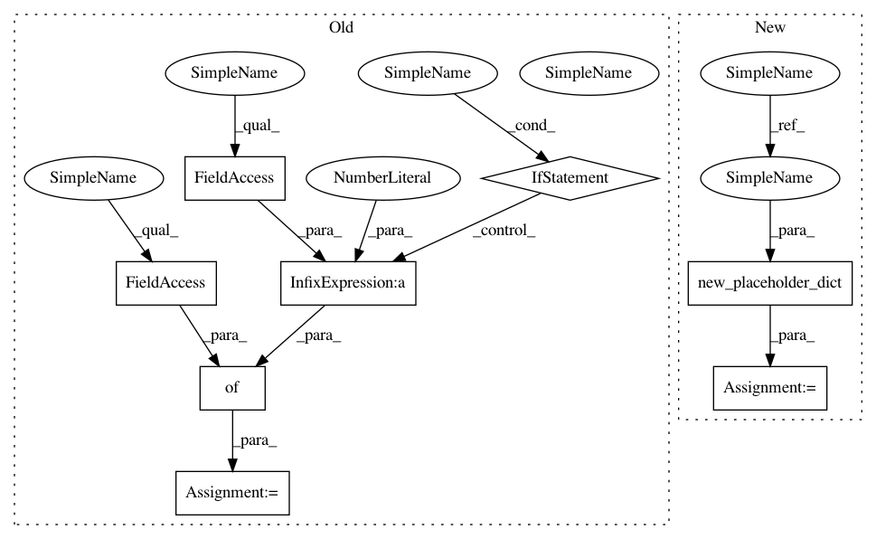

a77b1dab09dca52ac75ea9a3ccc2f33595b7600b,python/baseline/tf/lm/model.py,LanguageModelBase,make_input,#LanguageModelBase#Any#Any#,70
Before Change
def make_input(self, batch_dict, do_dropout=False):
pkeep = 1.0 - self.pdrop_value if do_dropout else 1.0
feed_dict = {self.pkeep: pkeep}
for key in self.embeddings.keys():
feed_dict["{}:0".format(key)] = batch_dict[key]
After Change
def make_input(self, batch_dict, train=False):
feed_dict = new_placeholder_dict(train)
for key in self.embeddings.keys():
feed_dict["{}:0".format(key)] = batch_dict[key]
In pattern: SUPERPATTERN
Frequency: 3
Non-data size: 8
Instances
Project Name: dpressel/mead-baseline
Commit Name: a77b1dab09dca52ac75ea9a3ccc2f33595b7600b
Time: 2018-11-06
Author: dpressel@gmail.com
File Name: python/baseline/tf/lm/model.py
Class Name: LanguageModelBase
Method Name: make_input
Project Name: dpressel/mead-baseline
Commit Name: a77b1dab09dca52ac75ea9a3ccc2f33595b7600b
Time: 2018-11-06
Author: dpressel@gmail.com
File Name: python/baseline/tf/seq2seq/model.py
Class Name: EncoderDecoderModelBase
Method Name: make_input
Project Name: dpressel/mead-baseline
Commit Name: a77b1dab09dca52ac75ea9a3ccc2f33595b7600b
Time: 2018-11-06
Author: dpressel@gmail.com
File Name: python/baseline/tf/seq2seq/model.py
Class Name: Seq2SeqParallelModel
Method Name: make_input